HW3 — DQN 及其變體
以 Deep Reinforcement Learning in Action 第三章 Gridworld 為底，三階段主題 + 加分題 Rainbow DQN 完整實作並比較 DQN 的演進。
HW3-1 · Naive DQN + Experience Replay static 模式
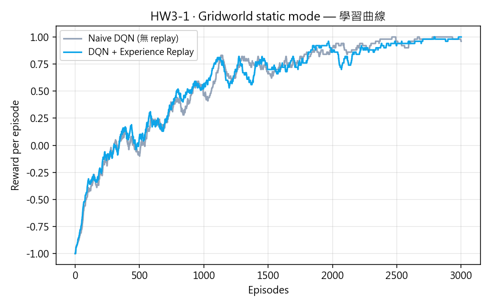
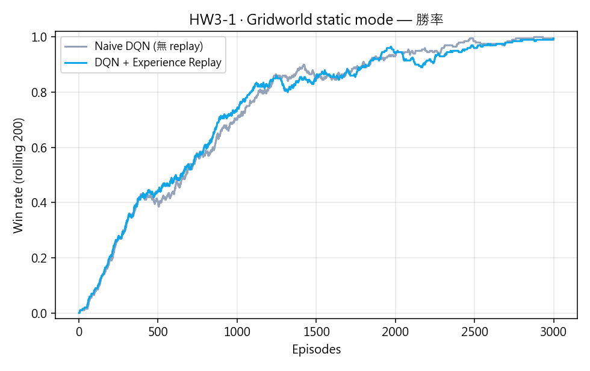
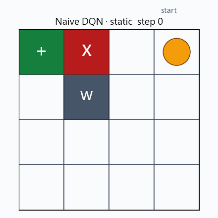
HW3-2 · Double DQN 與 Dueling DQN player 模式 player 模式
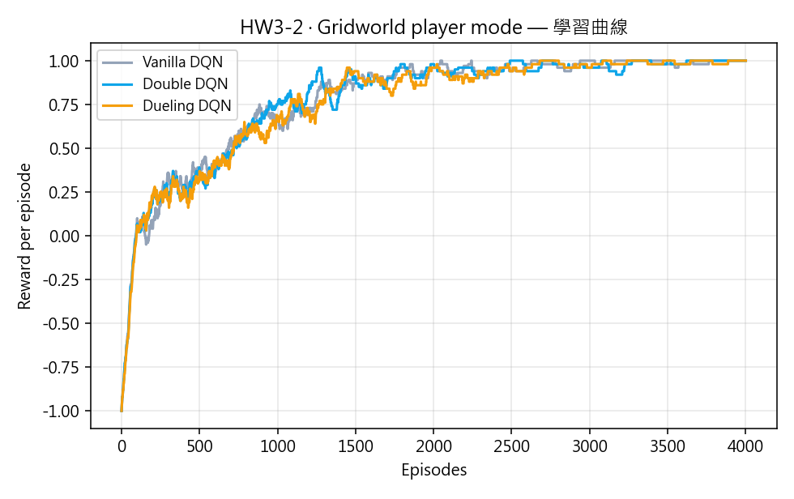
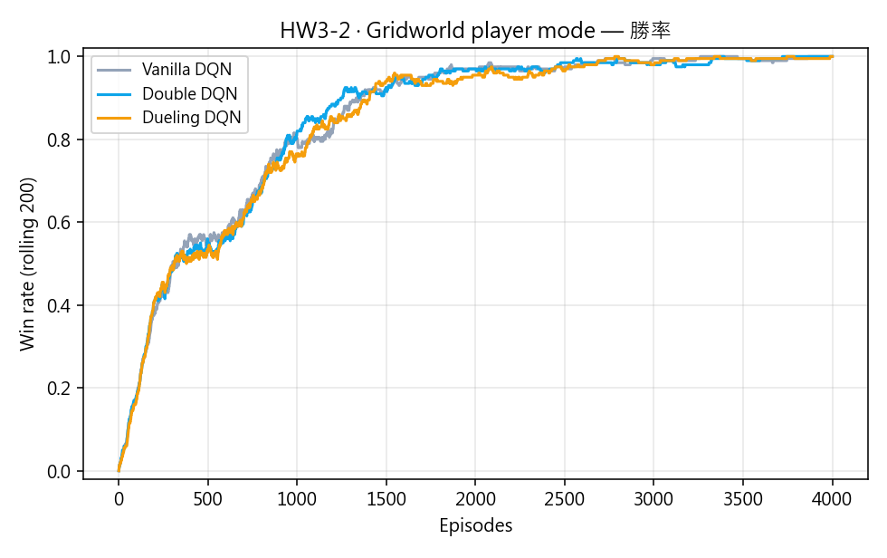
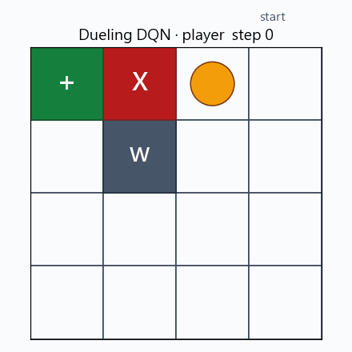
| 改進 | 重點 |
|---|---|
| Double DQN | online 網路挑動作、target 網路估值 ⇒ 緩解 max-operator 帶來的過度估計偏差。 |
| Dueling DQN | 拆成 V(s) + A(s, a) 兩個分支 ⇒ 即使各動作 Q 值差很小，也能正確學到「這個狀態本身多好」。 |
HW3-3 · PyTorch Lightning + Training Tips random 模式
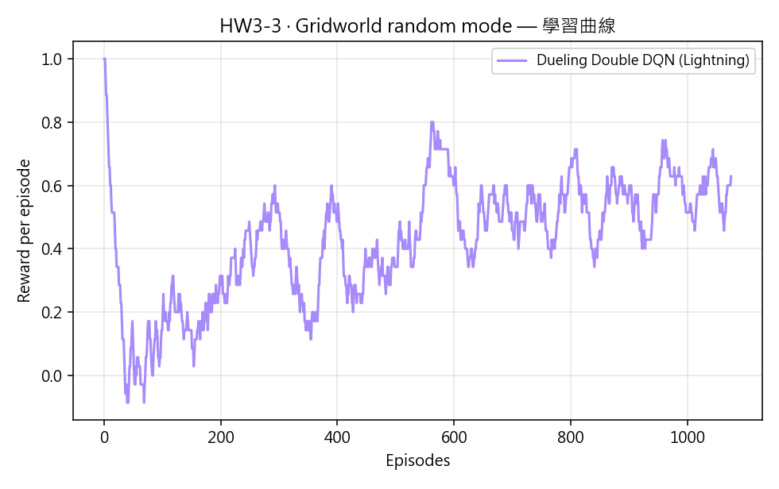
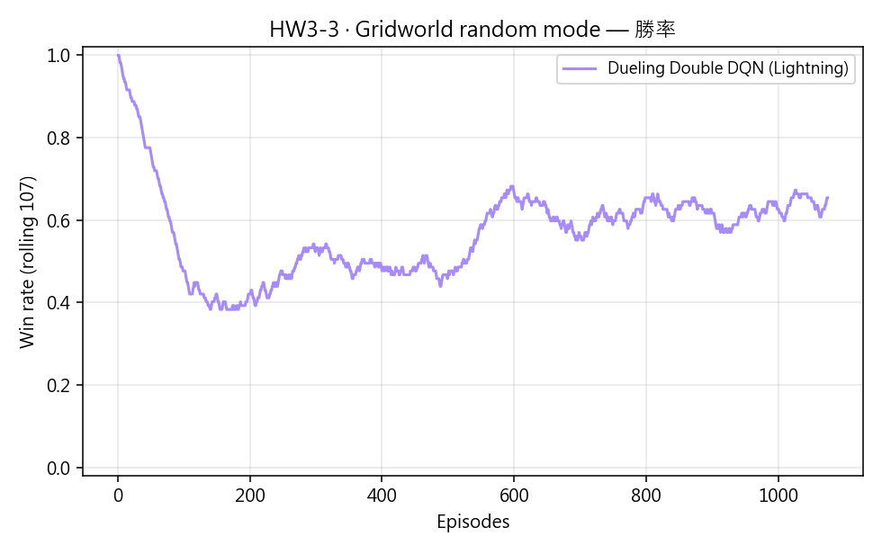
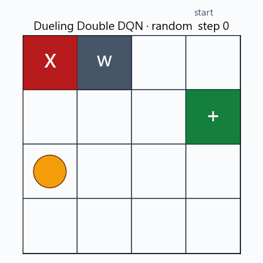
加入的訓練技巧
| 技巧 | 設定 | 為什麼有用 |
|---|---|---|
| 梯度裁剪 | gradient_clip_val = 1.0 | 避免 Q-learning 早期目標震盪造成的梯度爆炸 |
| Cosine LR annealing | 1e-3 → 1e-5 | 末期細調 Q 值，避免 overshoot |
| Target soft update | τ = 0.005（每步） | 比 hard sync 更平滑，顯著減少訓練中途崩潰 |
| ε 指數衰減 | 0.05 + 0.95·exp(−3·t/5000) | 前期快探索、中期迅速收斂、後期仍保留少量探索 |
| Warm-up buffer | 500 步才開始更新 | 避免過早以偏誤樣本更新網路 |
HW3-4 · Rainbow DQN 加分題 random 模式
把 Rainbow（Hessel et al., 2018）六個改進全部實作出來，並用嚴謹 ablation 找出在這個 toy env 上真的有效的子集。
六個改進都實作了
| # | 改進 | 本專案實作位置 |
|---|---|---|
| 1 | Double DQN | HW3-2/3 沿用 |
| 2 | Dueling DQN | HW3-2/3 沿用 |
| 3 | Prioritized Experience Replay | prioritized_replay.py（sum-tree, α=0.6, β: 0.4→1.0） |
| 4 | Multi-step (n-step) return | nstep.py（n=3，含 episode-end flush） |
| 5 | Distributional RL (C51) | models.py::CategoricalRainbowDQN + project_distribution |
| 6 | Noisy Networks | models.py::NoisyLinear |
Ablation 主結果（25k env steps、seed=0、其餘超參一致）
| 配置 | Rainbow 元件 | episodes / 25k | last-300 win rate |
|---|---|---|---|
| HW3-3 baseline · Dueling Double DQN | 2/6 | 1074 | 0.643 |
| Rainbow 4/6（+ PER + n=3）✨ best | 4/6 | 1224 (+14%) | 0.653 |
| Rainbow 5/6（+ C51） | 5/6 | 950 | 0.313 |
| Rainbow 5/6（+ NoisyNet） | 5/6 | 812 | 0.367 |
| Rainbow 6/6（full） | 6/6 | 706 | 0.133 |
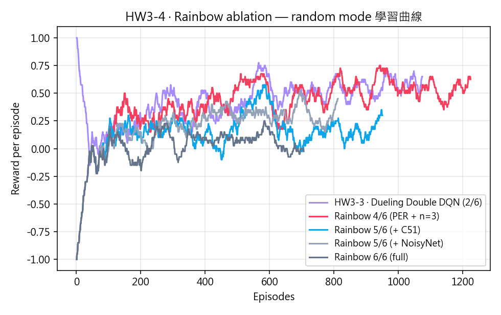
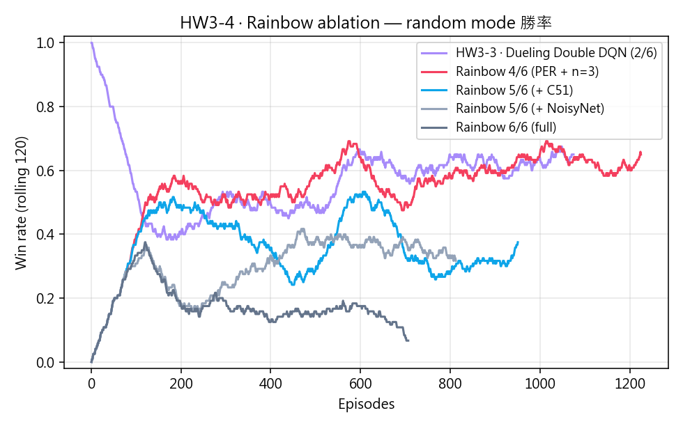
結論：在 4×4 toy random gridworld 上，只有 PER + n-step（4/6 配置）真正有效； 加上 C51 或 NoisyNet 反而傷害效能，全 6/6 最差。這呼應原始 Rainbow paper 在較簡單環境上的觀察 — distributional 與 NoisyNet 的好處主要來自高維、reward 多模態的環境。
最佳配置（4/6）的展示
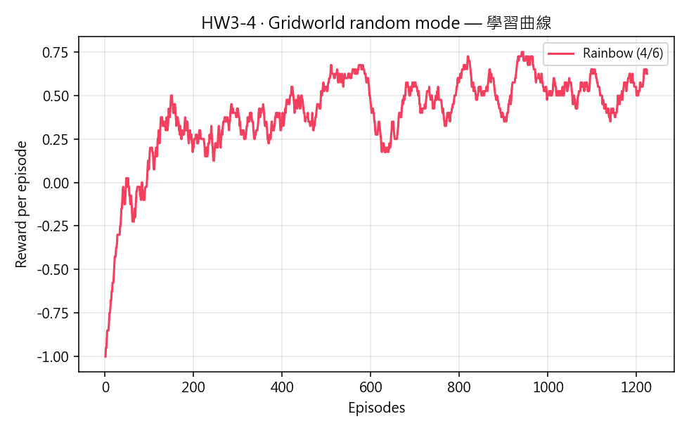
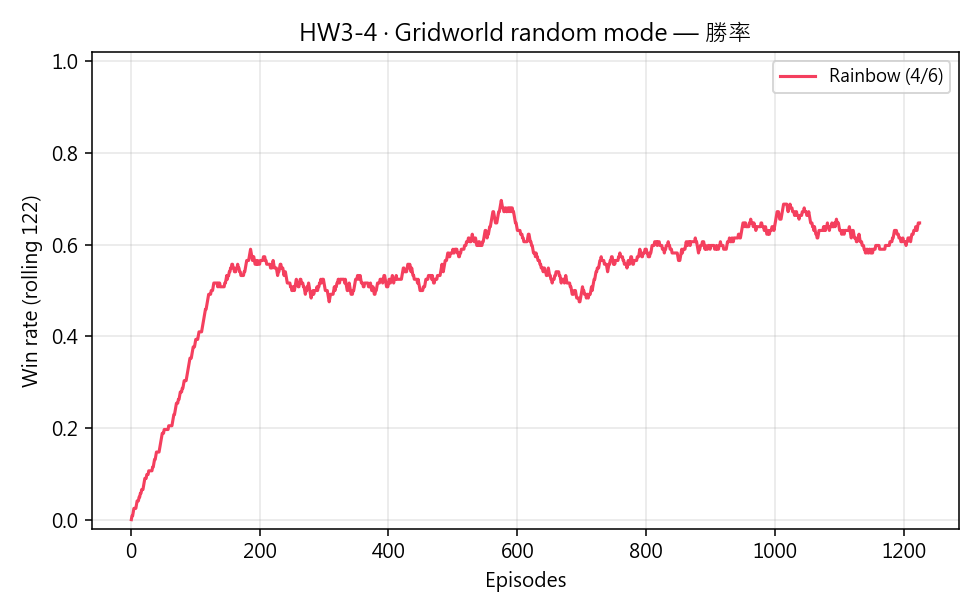
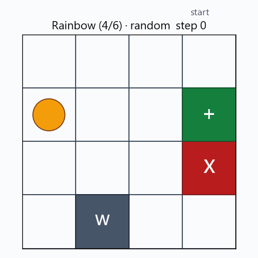
為什麼 C51 / NoisyNet 在這個 env 變差？
| 改進 | 失敗原因（toy env 特定） |
|---|---|
| C51 | reward ∈ {−1, 0, +1}、γ=0.9 → return 只在 [−1, 1]。51 個 atom 中只有 5–10 個有非零機率，其他 40+ 個增加 gradient noise；cross-entropy 的梯度尺度與 lr schedule 不太搭。 |
| NoisyNet | 狀態空間太小 → 共享權重 noise 高度相關，batch 內所有狀態同方向偏移；σ 是 learnable 可能不收斂；PER 放大誤判 transition 的權重。 |
結論
- Experience Replay 對 static 的 4×4 Gridworld 影響不大（環境本身太簡單），但會在 player / random mode 顯著加速收斂。
- player mode 下 Vanilla / Double / Dueling DQN 收斂後差異不大（上限 = 100%），差別在中段穩定性；換到 random mode 才能明顯看出 Dueling 與 Double 的優勢。
- Lightning 本身不會讓 agent 學得更好，但封裝後的 trainer-level 設定（梯度裁剪、LR schedule、soft update）一次掛上去就明顯穩定 random mode 的訓練。
- HW3-4 ablation 證實「全部都疊」不一定最好：在 toy env 上，PER + n-step 已足夠；C51 與 NoisyNet 在 reward 退化、state 空間小的條件下反而傷害效能。完整 Rainbow 程式碼仍保留在
src/hw3/，可用--noisy/--no-distributionalflag 任意組合。